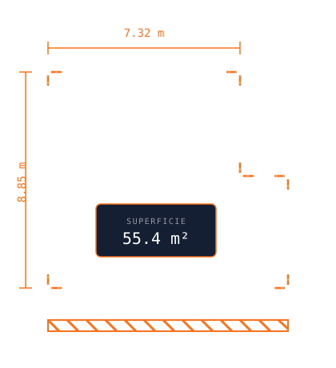

Augmented reality quantity takeoff
Measure a job site as fast as a glance.
SITE DIM turns your iPhone or iPad’s camera and LiDAR sensor into a survey tool. Walls, floors, ceilings, roofs, lengths and lots — measured in seconds, no tape measure or laser theodolite required.

A note on accuracy. SITE DIM is not more precise than a tape measure or a laser theodolite — a well-used physical tool remains the most exact instrument for hitting the exact edge of an object. What SITE DIM brings is reliability that manual measurement struggles to match: a perfectly straight line between two points, horizontally or vertically, every time. For the vast majority of job-site surveys, that level of accuracy is more than enough.
What SITE DIM measures
One device for the whole survey
Walls, floors, ceilings
Areas and volumes calculated instantly, room by room.
Roofs
Roof surface surveys taken from the ground or from a safe vantage point.
Lengths
Baseboards, mouldings and other linear runs measured in one pass.
Lots
Lot area with excavation and backfill calculations, up to 3 distinct backfills.
4 capture modes
Rectangle, circle, half-moon or full trace — matched to the real shape of the space.
Professional exports
Full-page PDF and vector DXF compatible with AutoCAD, ready to share.
21 advantages
Why switch to augmented reality surveying
- 01Measured in seconds
A full room surveyed far faster than with a tape measure.
- 02Instant calculation
Areas and volumes obtained immediately, no manual math afterward.
- 03One single pass
Walls, floors and ceilings captured in a single walk-through.
- 04Fewer return trips
Complete surveys the first time cut down on extra site visits.
- 05A guaranteed straight line
A perfectly straight line between two points, horizontally or vertically — hard to hold freehand with a tape measure over a long distance.
- 06Automatic corner squaring
Corners are squared automatically, removing a frequent source of angle error.
- 07Accuracy that’s enough
Suited to the vast majority of everyday job-site surveys.
- 08Measurements recorded digitally
Safe from a misread number or a transcription error on a notepad.
- 09Measure alone
No need for a second person to hold the other end of the tape.
- 10Less climbing and reaching
No need to climb or stretch a tape measure across long spans or heights.
- 11One device to bring
An iPhone or iPad replaces a tape measure, laser theodolite and site notebook.
- 12Full-page PDF export
A document ready to share with a client, subcontractor or supplier.
- 13Vector DXF export
Compatible with AutoCAD, usable directly in technical drawings.
- 14Metric and imperial together
Both systems displayed at once, no manual conversion.
- 15Organized data
All measurements from a project grouped and sorted automatically.
- 16Time reinvested
Less time spent measuring means more time bidding or building.
- 17Fewer ordering errors
Reliable areas and volumes reduce material ordering mistakes.
- 18One tool does it all
Replaces several specialized measuring instruments.
- 19Designed in Quebec
Developed by JDG inc. for the realities of the local job site.
- 20Bilingual from day one
The app is fully available in French and English.
- 21Built with tradespeople
Developed with local contractors and estimators.
Ready to measure differently?
Available on LiDAR-equipped iPhone and iPad, as soon as SITE DIM launches on the App Store.
See the download page